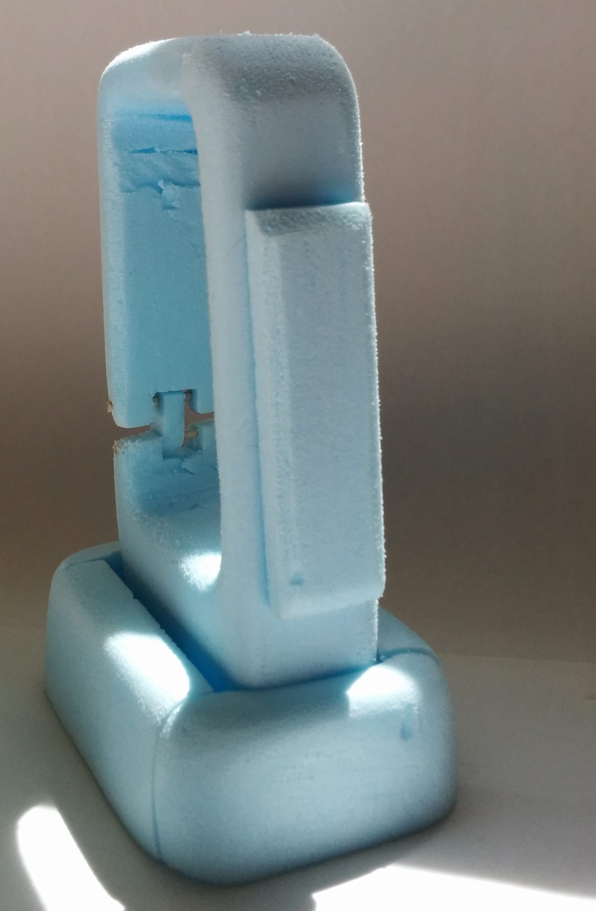
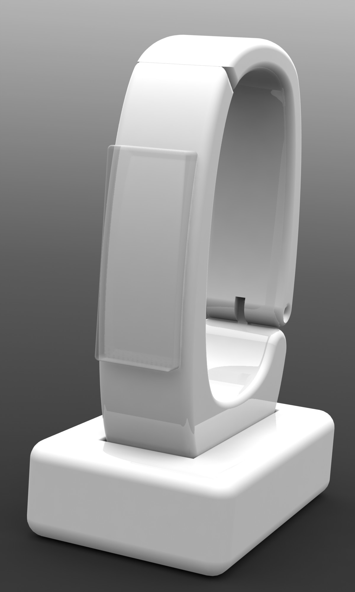
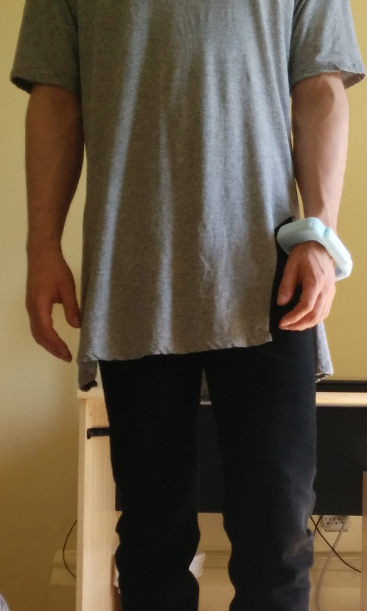
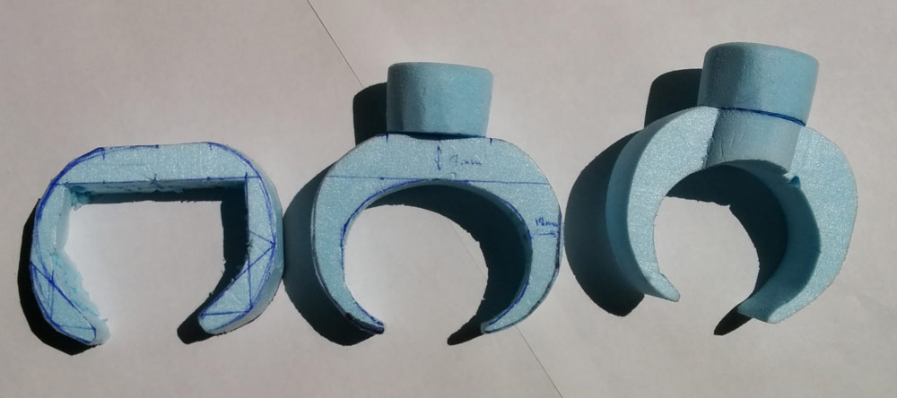

Flashlight prototype and 3D model
| Project timeline: | Summer 2015 |
|---|---|
| Tools used: | SolidWorks, blue foam, xacto knife, tape |
This wearable bracelet flashlight prorotype was made for a course in design materials. The wearable prototype was build out of blue foam. The design has gone through many iterations prior to being finalized. Several prototypes were made.



